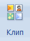

Вставка фото и картинок
Кроме печати текста, составления документов и таблиц, в программе Word можно добавлять к тексту картинки и фотографии. Вы можете вставить изображение как из интернета, так и со своего компьютера.
Из интернета
1. Поставьте мигающий курсор в то место листа, куда нужно добавить картинку.
Используйте Enter для перехода на строку ниже. Или можно просто кликнуть в нужном месте два раза левой кнопкой мыши.

2. Перейдите в раздел «Вставка» в верхнем меню. Нажмите на «Изображения из Интернета».
3. В строку «Поиск Bing» напечатайте запрос и нажмите Enter на клавиатуре.
4. Щелкните левой кнопкой мыши по понравившемуся кадру, чтобы он отметился птичкой (вверху). Затем нажмите на «Вставка».
Фото добавится туда, где мигал курсор (стояла палочка).
Из набора Microsoft
Важно! Набор готовых картинок есть только в ранних версиях Ворда (2007 и ниже).
Для добавления рисунка щелкните по пункту «Вставка» в верхнем меню и выберите «Клип».
В правой части программы появится дополнительное прямоугольное окошко.
В нем показаны картинки, которые есть в коллекции Microsoft. Для их просмотра кликайте по маленькой стрелочке в правом нижнем углу.
Выбрав изображение, щелкните по нему левой кнопкой мыши. Оно добавится в то место, где стоял курсор (мигала палочка).
С компьютера
Для того, чтобы вставить рисунок или фото с компьютера, нужно нажать на надпись «Вставка» в верхнем меню, а затем на «Рисунки».
Откроется окошко, через которое предлагается найти изображение с компьютера, диска или флешки. Вам нужно в этом окошке открыть ту папку, где находится фото. Сделать это можно воспользовавшись левой частью.
Чтобы было проще искать, поменяйте вид файлов и папок. Для этого внутри окошка кликните правой кнопкой мыши по пустому месту (по белой области. В появившемся списке наведите на пункт «Вид» и из дополнительного списка выберите «Огромные значки», «Крупные значки» или «Эскизы страниц».
Щелкните два раза левой кнопкой мышки по найденной картинке или фотографии. После этого она должна вставиться в то место, где стоял мигающий курсор.